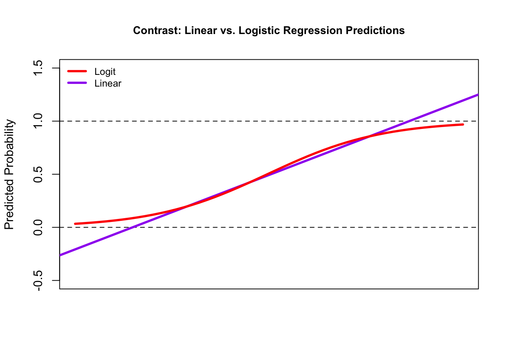
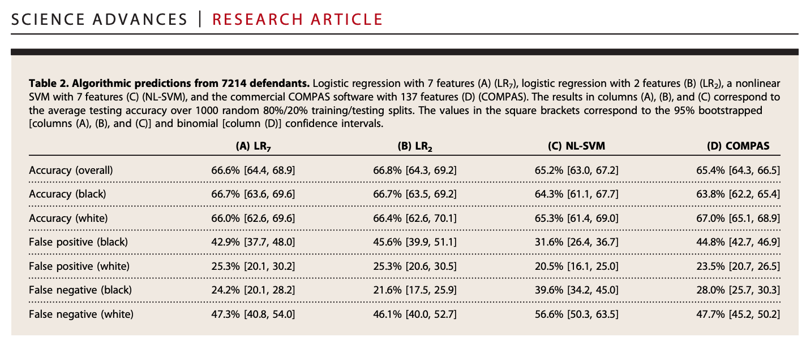

broward <- read.csv("browardsub.csv")9 Fairness and Ethics
In this section, we dicuss some issues with fairness in prediction/classification, as well as broader ethical issues confronting the intersection of data science and social science.
Fairness in Machine Learning
Machine learning comes with a bundle of potential ethical issues. Hold on– we are doing machine learning? Yes, in our prediction/classification sections, we have done a type of it.
- We have used a statistical model (in this case, regression) to learn and make inferences about patterns in data.
- A regression can be considered a type of algorithm
- We then apply the model to new data to make predictions and classify new data into categories.
- The models we have used are a type of “supervised machine learning” because our outcomes are pre-defined (vote share for Biden, a person donates vs. does not donate)
- Other types of machine learning may be fully ``unsupervised,” such as searching data to come up with outputs, such as topics in books of text
9.1 Application: Criminal Justice
This application is based on Dressel, Julia, and Hany Farid. “The accuracy, fairness, and limits of predicting recidivism.” Science advances 4.1 (2018): eaao5580.
Prediction and classification models are used all of the time in public policy, including in the criminal justice system: “where crimes will most likely occur, who is most likely to commit a violent crime, who is likely to fail to appear at their court hearing, and who is likely to reoffend at some point in the future” (Dressel and Farid)
Dressel and Farid develop and examine models that predict whether someone will recidivate– based on a measure of rearrest. They compare their own models to COMPAS (a well-known proprietary algorithm that generates risk scores) and to human-based predictions
We will develop a model similar to the one Dressel and Farid use in their paper, which seems to closely approximate COMPAS predictions.
Note: These algorithms have generated a lot of debate, concern and controversy, which we will discuss.
9.1.1 Load data
Below is a video explainer of this application, which uses classification and cross-validation.
Data include information about 7214 arrests in Broward County Florida in 2013-2014
Variables
sex: 0 male; 1: femaleagejuv_fel_count: total number of juvenile felony criminal chargesjuv_ misd_count: total number of juvenile misdemeanor criminal chargespriors_count: total number of non-juvenile criminal chargescharge_degree: a numeric indicator of the degree of the charge: 0: misdemeanor; 1: felonytwo_year_recid: a numeric indicator of whether the defendant recidivated two years after previous charge: 0: no, did not recidivate; 1: yes, did recidivate
9.1.2 Prediction/Classification process
Recall the steps for prediction/classification
- Choose Approach
- We will use a regression to try to classify subjects as those who will / will not recidivate
- Check accuracy
- We will calculate false positive rates and false negative rates
- We will use cross-validation to do so
- Iterate
9.1.3 Step 1: Regression Model
Step 1: Choose Approach
fit <- lm(two_year_recid ~ age + sex + juv_misd_count + juv_fel_count +
priors_count + charge_degree,
data = broward)Note: our outcome is binary
table(broward$two_year_recid)
0 1
3963 3251 When you use linear regression with a binary outcome, it is called a linear probability model. We estimate the probability of recidivism– a number between 0 and 1.
- There are downsides to using linear regression with this type of outcome. Data scientists may often use a different model called logistic regression for this.
Make Prediction.
## estimates a predicted probability of recidivism for each subject
broward$predictedrec <- predict(fit)
## Range of predicted probabilities
range(broward$predictedrec)[1] -0.1463835 1.6059606Note: One downside of linear models is they can generate probabilities below 0 or above 1. Logistic regression will constrain these due to a transformation it makes when estimating the coefficients.
9.1.3.1 Detour: Logistic Regression
As an alternative, you could use logistic regression, which data scientists may often use when trying to do a classification task– predicting which category a subject belongs to (e.g., recidivate vs. not recidivate; turned out to vote vs. did not turn out to vote). We won’t focus on logistic regression in this class, but you can know it is out there for future study.
Step 1: Choose Approach- Let’s try logistic regression instead
For details, expand.
## Logistic regression
fitl <- glm(two_year_recid ~ age + sex + juv_misd_count + juv_fel_count +
priors_count + charge_degree,
data = broward,
family=binomial(link = "logit"))
## estimates a predicted probability of recidivism for each subject
broward$predictedrecl <- predict(fitl, type="response") # need type="response" to make them probabilities
## Range of predicted probabilities of recidivism
range(broward$predictedrecl)[1] 0.04176846 0.99891808Logistic regression keeps probabilities between 0 and 1 due to a transformation it applies to our standard regression formula. As a result, our coefficient units (coef(fitl)) are in log-odds units, which are hard to interpret. We can transform our predictions of the model into probabilities using the predict() function with type = "response".
We can compare the predictions of the probability of recidivism between the linear and logistic regression models. Note how the linear model blows past 0 and 1, while the logistic-based predictions can keep them within those bounds.

We don’t have time to go into the math of logistic regression in this course, but know that it is a desirable option for classification.
For now, let’s stick with the linear model.
9.1.3.2 Change Prediction into a Classification
Recall: we are trying to classify
- We need to make our estimates of the probability of recidivism categorical, into simply a prediction of recidivate vs. not recidivate
For now, we will use .5 as a threshold (a probability of more than .5)
# Need to make prediction binary.
# We use .5, but there are other methods for choosing this threshold
broward$predictedrecclass <- ifelse(broward$predictedrec > .5, 1, 0)Predicted Recidivism
table(predicted=broward$predictedrecclass)predicted
0 1
4683 2531 9.1.4 Step 2: Check Accuracy
We are going to get extra practice with cross-validation as a way to check accuracy. Recall:
Cross-validation (train vs. test data)
- Subset your data into two portions: Training and Test data.
- Run a model based on the training data.
- Make a prediction and test the accuracy on the test data.
- Repeat process training and testing on different portions of the data.
- Summarize the results and choose a preferred model
- Eventually: Apply this model to entirely new data
Goal: Test accuracy in a way that can help detect overfitting. See how well our model will generalize to new data (data the model hasn’t seen).
We will use leave-one-out cross-validation again, but there are other methods, such as splitting data into “folds” of multiple observations at once (i.e., leaving out 100 or 1000 observations for testing instead of just 1).
## Step 1: Subset Data
traindata <- broward[-1,] # all but first row
testdata <- broward[1,] # just the first row
## Step 2: Run model on training data
fittrain <- lm(two_year_recid ~ age + sex + juv_misd_count
+ juv_fel_count +
priors_count + charge_degree,
data = traindata)
## Step 3: Predict with test data
predictedrec <- predict(fittrain, testdata)
## Step 3: Change predicted probability into a classification
cvpredictions <- ifelse(predictedrec > .5, 1, 0)Step 4: Repeat across all observations and summarize accuracy.
We want to repeat this process for every row of our data– leaving out a different row each time. To construct our loop, we embed the above process in the loop syntax.
## Iteration vector
## 1:nrow(broward)
## Container vector
broward$cvpredictions <- NA
for(i in 1:nrow(broward)){
## Step 1: Subset Data
traindata <- broward[-i,] # all but ith row
testdata <- broward[i,] # just the ith row
## Step 2: Run model on training data
fittrain <- lm(two_year_recid ~ age + sex + juv_misd_count
+ juv_fel_count +
priors_count + charge_degree,
data = traindata)
## Step 3: Predict with test data
predictedrec <- predict(fittrain, testdata)
broward$cvpredictions[i] <- ifelse(predictedrec > .5, 1, 0)
}9.1.4.1 Confusion Matrix
Check Accuracy: Confusion Matrix
confmatrix <- table(actual = broward$two_year_recid,
predicted = broward$cvpredictions)
confmatrix predicted
actual 0 1
0 3156 807
1 1528 1723How should we interpret each cell?
- Let’s Consider 1 = Recidivate = Positive outcome; 0 = Not Recidivate = Negative Outcome
- What is a false positive? false negative? true positive? true negative?
9.1.4.2 False Positive Rate
False Positive Rate: \(\frac{\text{False Positive}}{\text{(False Positive + True Negative)}}\)
- Out of those who do not recidivate, how often did we predict recidivate?
## One Approach
sum(broward$cvpredictions == 1 & broward$two_year_recid == 0) /
sum(broward$two_year_recid == 0)[1] 0.2036336## Alternative Approach
## predicted recidivism, actual not
fp <- confmatrix[1, 2]
# predicted not, actual not
tn <- confmatrix[1, 1]
## False Positive Rate
fp / (fp + tn)[1] 0.20363369.1.4.3 False Negative Rate
False Negative Rate: \(\frac{\text{False Negative}}{\text{(False Negative + True Positive)}}\)
- Out of those who did recidivate, how often did we predict not recidivate?
# Out of those who recidivate, how often does it predict not recidivate?
sum(broward$cvpredictions== 0 & broward$two_year_recid == 1) /
sum(broward$two_year_recid == 1)[1] 0.4700092## Alternative Approach
## predicted to not recidivate, actual yes
fn <- confmatrix[2, 1]
tp <- confmatrix[2, 2]
## False Negative Rate
fn / (fn + tp)[1] 0.47000929.2 Taking Fairness Seriously
Recall the steps for prediction/classification
- Choose Approach
- We will use a regression to try to classify subjects as those who will / will not recidivate
- Check accuracy
- We will calculate false positive rates and false negative rates
- We will use cross-validation to do so
- What about fairness?
- Iterate
The performance of a prediction/classification may be different for different groups in the population. Dressel and Farid point to this when it comes to different racial groups.

Let’s see how our predictions perform across racial groups
race: 1: White (Caucasian); 2: Black (African American); 3: Hispanic; 4: Asian; 5: Native American; 6: Other
Wait a second– we didn’t use race in our model. Why could the performance still differ across racial groups?
- Think about how the inputs in our regression model could be correlated with race.
- Think about how existing human biases and inequalities that lead to differential arrest rates by racial groups could be reproduced in our model.
- Even if a model does not have the intent to include race, its impact may nonetheless vary according to race. This could be true for any number of characteristics depending on the application.
We will subset our data by race.
black <- subset(broward, race == 2)
white <- subset(broward, race == 1)We can first check overall accuracy
mean(black$cvpredictions == black$two_year_recid)[1] 0.6696429mean(white$cvpredictions == white$two_year_recid)[1] 0.6805216But are we making the same types of errors?
## False positive rate- Black
## Out of those who do not recidivate, how often did we predict recidivate?
fprate.black <- sum(black$cvpredictions == 1 & black$two_year_recid == 0) /
sum(black$two_year_recid == 0)
## False negative rate- Black
## Out of those who recidivate, how often does it predict not recidivate?
fnrate.black <-sum(black$cvpredictions== 0 & black$two_year_recid == 1) /
sum(black$two_year_recid == 1)
## False positive rate- white
fprate.white <- sum(white$cvpredictions == 1 & white$two_year_recid == 0) /
sum(white$two_year_recid == 0)
## False negative rate- white
fnrate.white <-sum(white$cvpredictions== 0 & white$two_year_recid == 1) /
sum(white$two_year_recid == 1)Let’s see how our predictions perform across racial groups
## False positive rates
fprate.black[1] 0.2846797fprate.white [1] 0.1323925## False negative rates
fnrate.black[1] 0.3734876fnrate.white [1] 0.6076605We see asymmetries in the types of errors the model is making across racial groups. Black subjects have higher false positives– more likely as being predicted to recidivate (a predicted “positive”) when they do not (the “false” in false positive). White subjects have higher false negatives– predicted not to recidivate (the negative) when they do (the false in false negative).
Based on these results, reflect on the following:
- Should we use this type of algorithm in public policy?
- What might be desirable about this process over alternatives?
- What are possible concerns?
- Does your answer depend on accuracy or other considerations?
- What should we care more about? False positives or false negatives?
- What measures of fairness should be considered?
- Are there ways to avoid an unfair/biased model?
9.2.1 Extended Learning
Note: There are many debates about the use of these algorithms
- Example of Initial Critique from ProPublica
- Example of Rejoinder
- Discussion of what fairness means: J. Kleinberg, S. Mullainathan, M. Raghavan, Inherent trade-offs in the fair determination of risk scores. (2016).
- Notes that goals of fairness can be in competition:
- Well-calibrated: if the algorithm identifies a set of people as having a probability z of constituting positive instances, then approximately a z fraction of this set should indeed be positive instances
- Balance for positive and negative instances across groups: the chance of making a mistake on should not depend on which group they belong to.
For more on fairness and machine learning
- FAIRNESS AND MACHINE LEARNING: Limitations and Opportunities by Solon Barocas, Moritz Hardt, Arvind Narayanan.
- Vivek Singh’s Research Lab
- Rutgers Critical AI group
- See the “Gender Shades” project from Joy Buolamwini
- See Brookings Report on Bias in AI